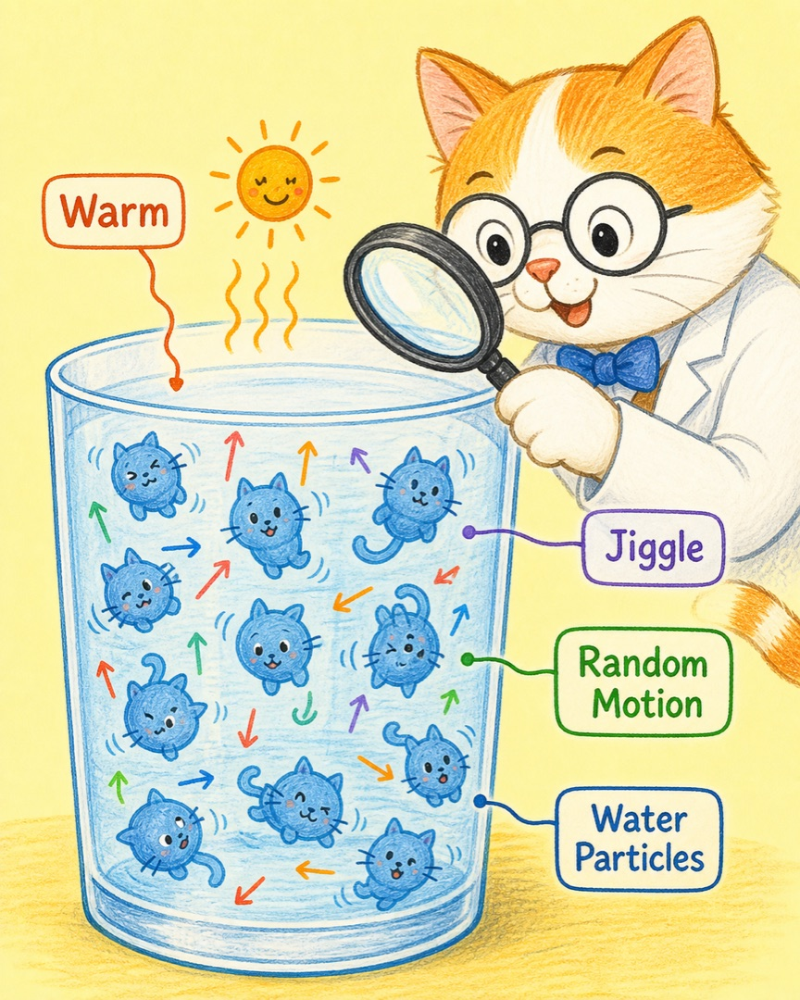
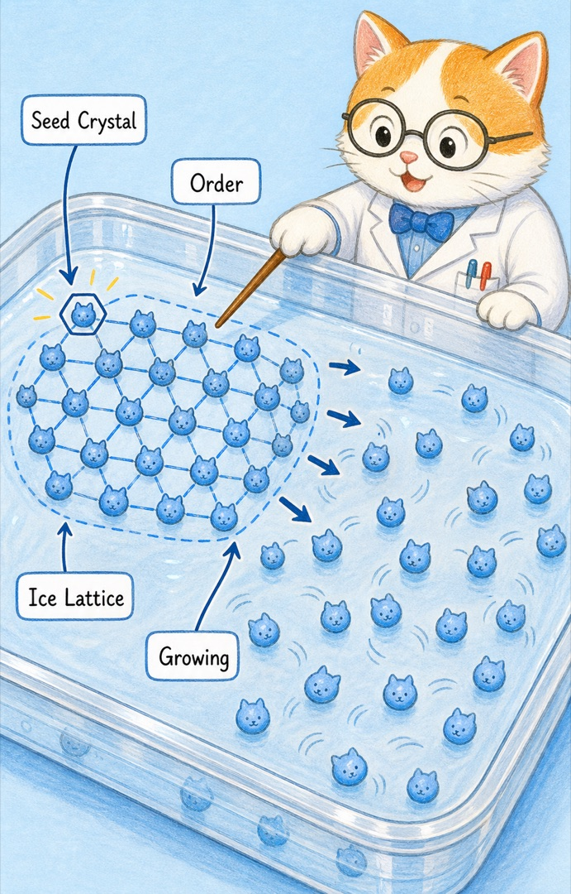
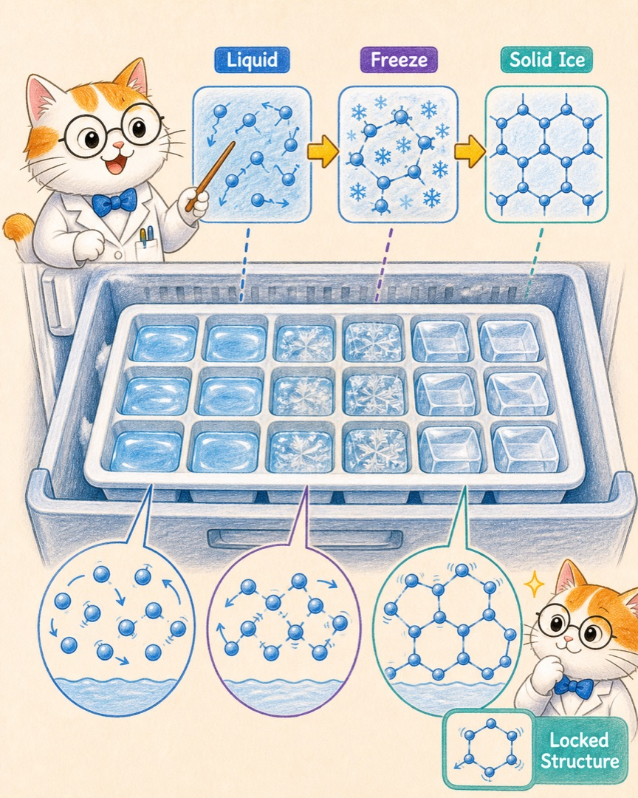
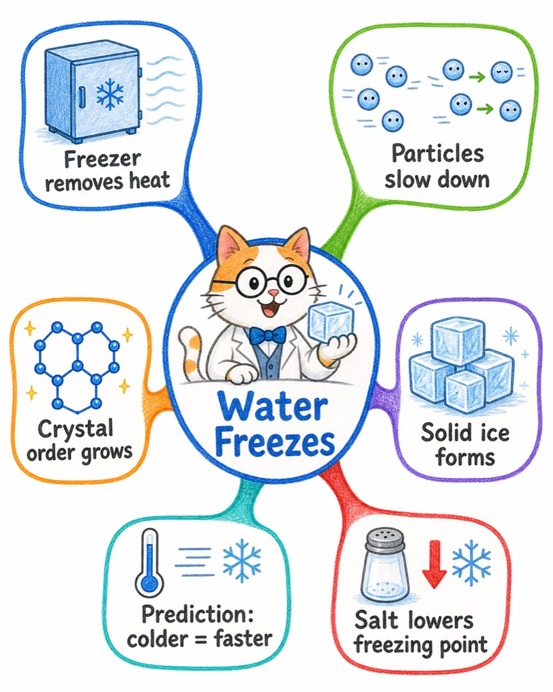

喵博士解释万物 · 给探险家的冰箱观察课
冰箱里的水为什么会冻成冰块？
喵呜，答案不是“冰箱把冰塞进了水里”。真正发生的是：冰箱不断带走水里的热能，让水的小猫们慢下来，并排成一座有秩序的冰晶小城。
明明还是同一杯水，为什么它从“会流动”变成了“能拿在手里”？
第一站 · 核心翻译
在我们的世界里，那其实是……
冰箱里的冷气不是一只“冷冷小猫”钻进水里，而是冰箱的制冷系统把水的热量搬走。水越冷，里面的小水猫就越不容易大幅度乱蹦。
热量出去水的能量被冰箱搬走，温度下降。
动作变慢水分子仍在动，只是没有那么自由。
队形固定分子排成晶格，流动水变成固体冰。
第二站 · 故事板 01
冰箱先做的事：把热量带走

第三站 · 故事板 02
热量少了，小水猫还会动吗？

第四站 · 故事板 03
一小块冰晶，成为整队的起点

第五站 · 故事板 04
队形锁住，水就成了冰

探险家预测台
如果冰箱更冷、空气流动更顺畅，热量通常会更快离开，结冰会更快。水放得越多，或容器越厚，中心的热量越难出去，就会更慢。
但这里有一个重要边界：不是所有水都在 0℃ 就结冰。盐水、糖水等混合液的结冰点会改变；冰箱温度不够低时，它们可能仍然是液体。水在密闭硬容器里结冰还会膨胀，所以不要把装满水的玻璃瓶硬塞进冷冻室。
最后一站 · 总结地图
把整条因果链收进一张图

这就是喵博士与探险家共同找到的答案：冰箱带走热量，水的小猫慢下来并排成晶格，流动的水便长成了可以握住的冰块。
下一次打开冷冻室，你可以猜猜：同样大小的水，放在金属模具和厚玻璃杯里，谁会先结冰？